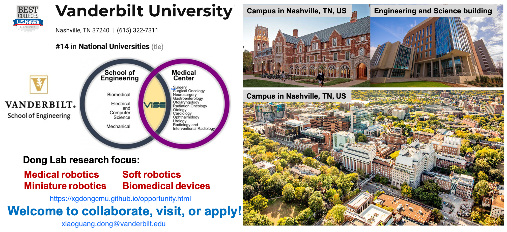

Open Opportunity

Opening postdoc positions
- We are actively looking for one postdoc to work on wireless medical miniature robots.
Strong candidates should send 1) Cover Letter, 2) resume/CV, and 3) representative papers in a single PDF to Dr. Xiaoguang Dong via email xiaoguang.dong@vanderbilt.edu.
Opening PhD positions
- We are always welcoming strong potential PhD students who are interested in miniature robotics to apply.
Please send your Cover Letter, resume/CV and representative papers (if any) in a single PDF to Dr. Xiaoguang Dong via email xiaoguang.dong@vanderbilt.edu. Please also fill this Survey Form, Graduate.
Master and undergraduate students
- We are welcoming Master students and undergraduate students who want to participate research projects on small-scale robotics.
Interested students should fill out this Survey Form, UG, and send 1) Cover Letter, 2) resume/CV, 3) unofficial transcript in a single PDF to Dr. Xiaoguang Dong via email xiaoguang.dong@vanderbilt.edu.
Visiting students and researchers
- We are also welcoming visiting students and researchers to contact for short visiting and collaboration.
Please send your Cover Letter, resume/CV and representative papers (if any) in a single PDF to Dr. Xiaoguang Dong via email xiaoguang.dong@vanderbilt.edu. I will try to reach you back as soon as possible.